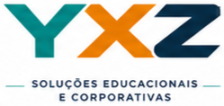
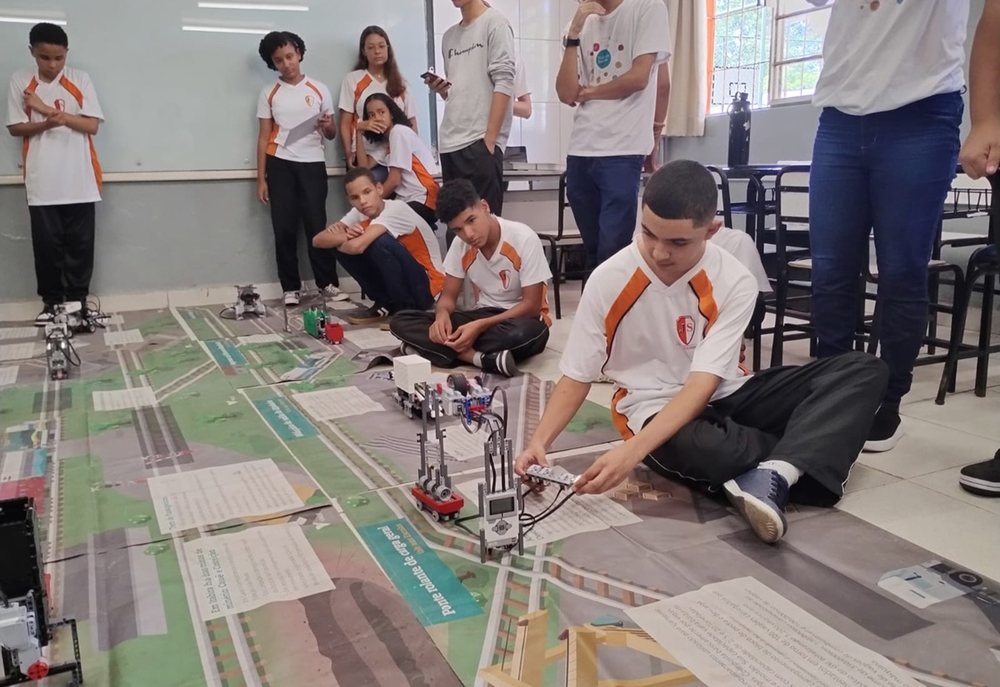
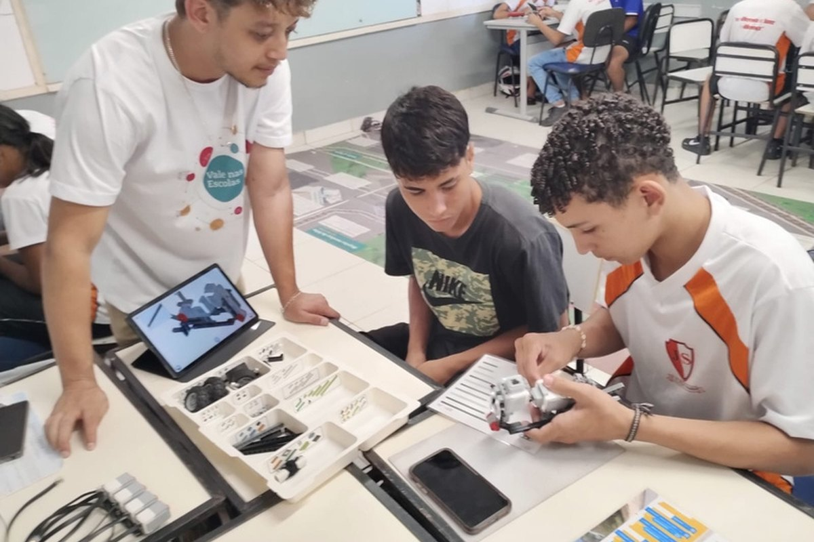
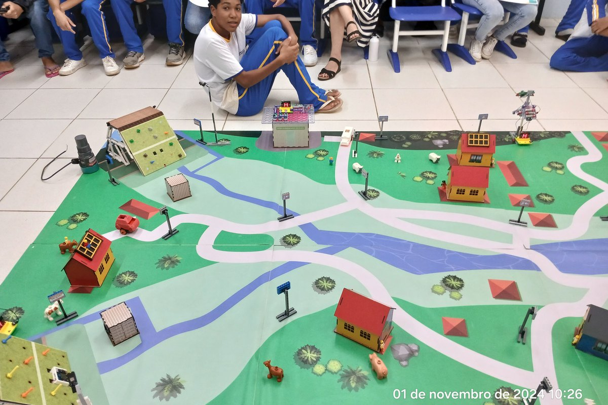
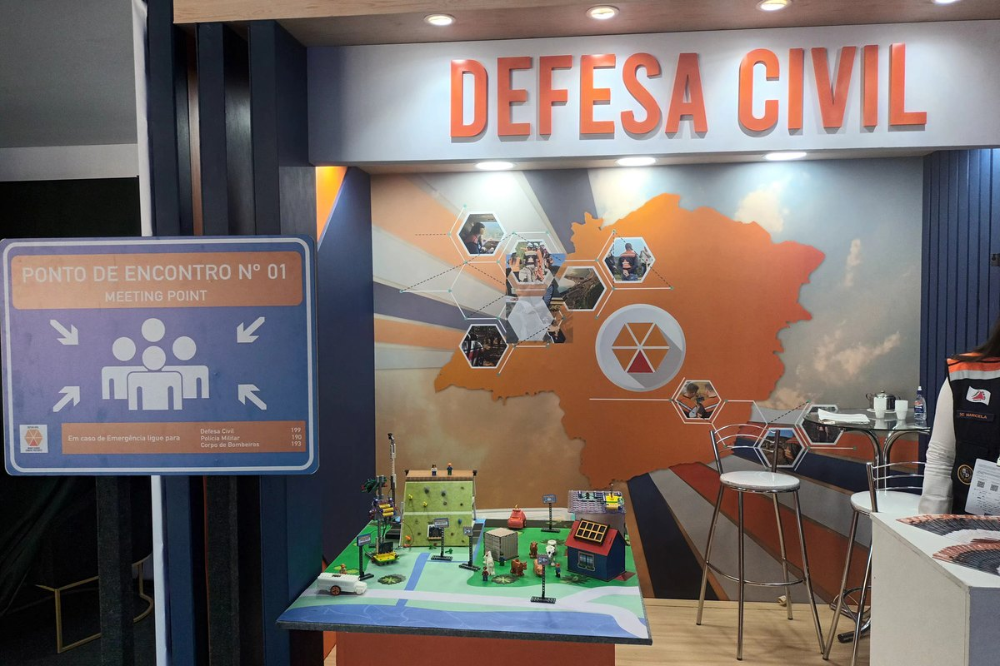
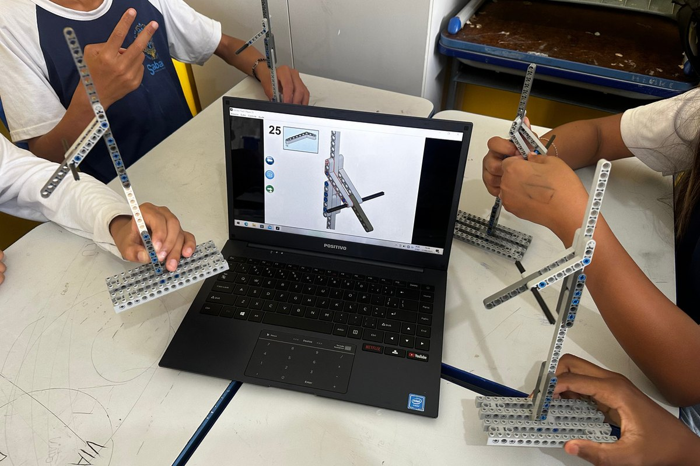
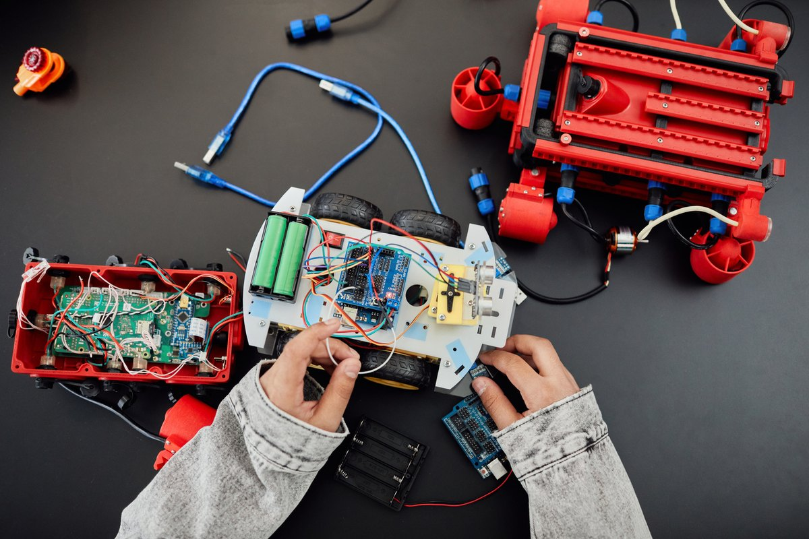
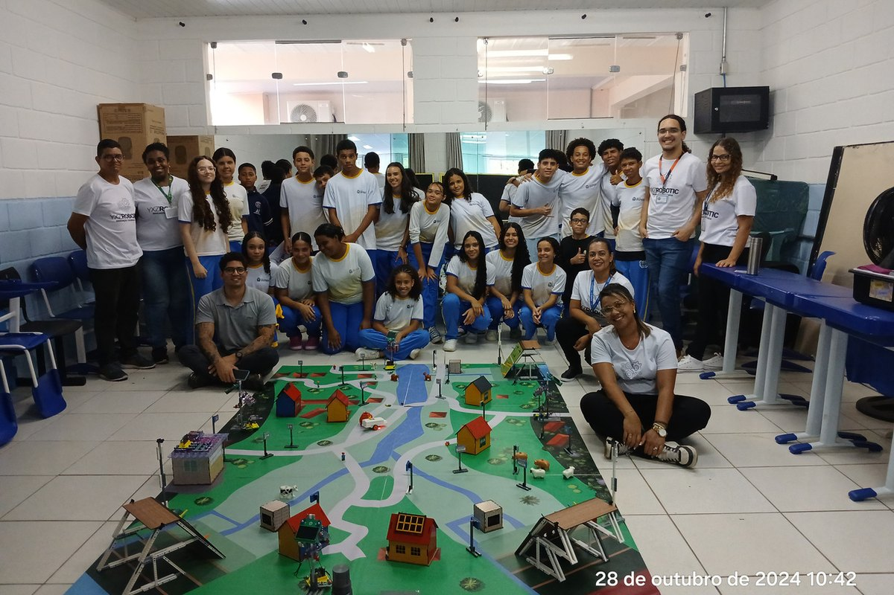
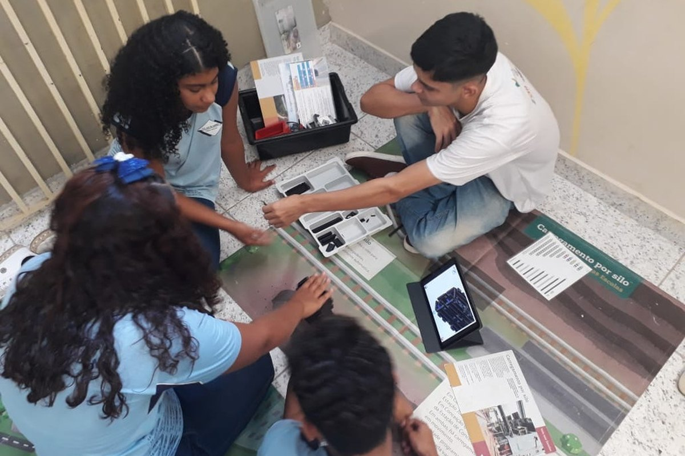

Personalização
Conteúdos, cenários, fichas e missões adaptados à realidade do projeto e da empresa contratante.

Robótica • Maker • Sustentabilidade • PAEBM
Transformamos conteúdos técnicos e institucionais em oficinas práticas, lúdicas e memoráveis para escolas, empresas, comunidades e públicos estratégicos.

A YXZ Soluções Educacionais desenvolve experiências educativas sob medida, com robótica educacional, recursos maker, storytelling e cenários interativos. A proposta é traduzir temas complexos em vivências acessíveis, criativas e conectadas à realidade da contratante.
Cada projeto combina acolhimento, mediação pedagógica, construção, programação, apresentação e registro de evidências, gerando diálogo, engajamento e aprendizagem aplicada.
Conteúdos, cenários, fichas e missões adaptados à realidade do projeto e da empresa contratante.
Alunos constroem, programam, testam e apresentam soluções em contextos reais e simulados.
Equipe estruturada com coordenação, instrutores, registros fotográficos e relatórios de execução.
Oficinas e exposições que ajudam empresas e instituições a comunicar temas técnicos, ambientais e sociais com clareza, participação e impacto.

Missões robóticas para representar etapas de produção, logística, mineração, pelotização e controles ambientais.

Criação de narrativas, quadrinhos e protótipos para desenvolver consciência ambiental, empatia e pensamento crítico.

Atividades maker e robóticas para compreensão de riscos, planos de emergência, evacuação, alertas e cultura prevencionista.
Use os filtros para explorar linhas de atuação. Todos os formatos podem ser adaptados por território, público, tema e carga horária.

Oficina com robôs, tapetes temáticos, fichas de estudo e programação para representar processos produtivos.
Experiência de contação de histórias com blocos de montar, tablets, cenários e narrativas ambientais.
Oficina maker e robótica para simular barragens, monitoramento, alerta, evacuação e resposta a emergências.

Atividades para crianças e jovens com ciclo de vida de produtos, controles ambientais e desafios de montagem.

Montagens demonstrativas e interação com a população em feiras, eventos institucionais e ações comunitárias.

Projetos personalizados para manejo de resíduos, cidades inteligentes, clima, território e comunicação institucional.
Indicadores reunidos a partir dos materiais institucionais e relatórios de oficinas da YXZ.
Entendimento do território, público, mensagem institucional e objetivos pedagógicos.
Criação de cenários, roteiros, fichas de estudo, desafios, programação e materiais de apoio.
Educador social, coordenação, monitores e instrutores conduzem a oficina com segurança e acolhimento.
Evidências fotográficas, dados de participação e avaliação para prestação de contas e melhoria contínua.
Preencha o formulário para gerar uma solicitação de orçamento por e-mail. A estrutura está pronta para publicação como site estático e pode ser integrada a Netlify Forms, Formspree, HubSpot ou outro CRM no futuro.